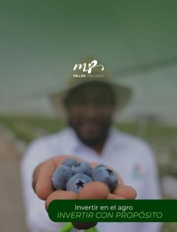

Su proyecto


Agroventure Capital y el arándano colombiano
Empresa que él fundó para estructurar proyectos de berries bajo agricultura protegida en Boyacá, con expansión a Cundinamarca, financiados con inversionistas institucionales, family offices, fondos y banca.
